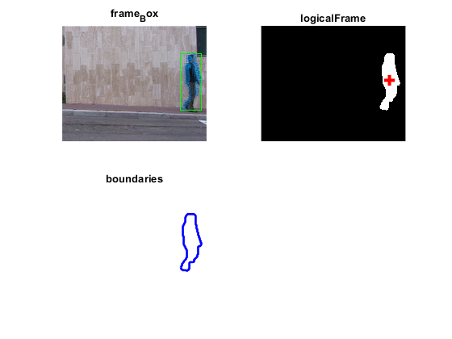

close all
clear;
clc;
videoSource = VideoReader('F:\dataset\datasets\walk\shahar_walk.avi');
width = videoSource.Width;
height =videoSource.Height;
Threshold = 0.02;
CloseSize = 8;
desiredAngles = 5:5:360;
heiwid = numel(videoSource);
boundary = ones(height,width);
swit = 1;
detector = vision.ForegroundDetector( ...
'NumTrainingFrames',5, 'InitialVariance', 30*30);
blob = vision.BlobAnalysis(...
'CentroidOutputPort', false, 'AreaOutputPort', false, ...
'BoundingBoxOutputPort', true, ...
'MinimumBlobAreaSource', 'Property', 'MinimumBlobArea', 800,...
'MaximumCount',3);
shapeInserter = vision.ShapeInserter('BorderColor','Custom');
opticFlow = opticalFlowHS('Smoothness',1, 'MaxIteration', 10, 'VelocityDifference', 0);
opticalBG = ones(height, width)*255;
frameLogical = ones(height,width);
gua=1;
while hasFrame(videoSource)
frameRGB = readFrame(videoSource);
frameGray = rgb2gray(frameRGB);
flow = estimateFlow(opticFlow, frameGray);
for i = 1:height
for j = 1:width
if(sqrt(flow.Vx(i, j)^2 + flow.Vy(i, j)^2) <= Threshold)
frameLogical(i, j) = 0;
else
frameLogical(i, j) = 255;
end
end
end
se = strel('square', CloseSize);
frameLogical = imclose(frameLogical, se);
frameLogical =logical(frameLogical);
bbox = step(blob, frameLogical);
out = insertShape(frameRGB,'Rectangle',bbox,'color','green');
[labelImage, numberOfImage] = bwlabel(frameLogical, 8);
blobMeasurements = regionprops(labelImage, 'Centroid');
yCenter = blobMeasurements(1).Centroid(1);
xCenter = blobMeasurements(1).Centroid(2);
if xCenter>height && yCenter>width
disp('out of iamge...');
continue;
end
[B,L] = bwboundaries(frameLogical,'noholes');
boundaries=B;
boundaries = boundaries{1};
Boun_num = size(boundaries);
xb = boundaries(:,1);
yb = boundaries(:,2);
angles = atan2d((yb-yCenter),(xb-xCenter))+180;
position_coordinate = [xb,yb,angles];
distances = sqrt((xb-xCenter).^2+(yb-yCenter).^2);
[uniqueAngles, ia, ic]= unique(angles);
uniquexb= xb(ia);
uniqueyb = yb(ia);
uniqueDistances = distances(ia);
uniqueAngles = [uniqueAngles(end)-360; uniqueAngles; uniqueAngles(1) + 360];
uniquexb = [uniquexb(end); uniquexb; uniquexb(1)];
uniqueyb = [uniqueyb(end); uniqueyb; uniqueyb(1)];
desiredxb = interp1(uniqueAngles, uniquexb,desiredAngles);
desiredyb = interp1(uniqueAngles, uniqueyb,desiredAngles);
uniqueDistances = [uniqueDistances(end); uniqueDistances; uniqueDistances(1)];
desiredDistances = interp1(uniqueAngles, uniqueDistances,desiredAngles);
allcoordinate(:,1) = desiredDistances;
allcoordinate(:,2) = desiredxb;
allcoordinate(:,3) = desiredyb;
xc=round(xCenter);
yc=round(yCenter);
xe=round(desiredxb);
ye=round(desiredyb);
for inx = xe(1):xe(end)
if all(xe==xc)&&all(yc==ye)
disp('the same point with centroid');
continue;
end
if all(xc==xe)||all(yc==ye)
disp('at 0|90 degree...')
continue;
elseif (xe>xc)
steps = 1;
else
steps = -1;
end
k =((ye-yc)/(xe-xc));
inin = 1;
for x = xc:steps:inx
y =k*(x-(xc))+yc;
y = round(y);
values = frameLogical(x,y);
swit = frameLogical(xe(inx),ye(inx));
if values ~= swit
intersection_space = zeros(1,9);
intersection_distance = sqrt((xe(inx)-xCenter).^2+(ye(inx)-yCenter).^2);
intersection_space(1,1)= xe(inx);
intersection_space(1,2)= ye(inx);
intersection_space(1,3)=intersection_distance;
intersection_space(1,4)=x;
intersection_space(1,5)=y;
intersection_distance = sqrt((x-xCenter).^2+(y-yCenter).^2);
intersection_space(1,6)=intersection_distance;
swit = values;
dlmwrite('intersaction.csv',intersection_space,'-append');
continue;
end
end
intersection_space1 = zeros(1,9);
intersection_distance = sqrt((xe(inx)-xCenter).^2+(ye(inx)-yCenter).^2);
intersection_space1(1,1)= xe(inx);
intersection_space1(1,2)= ye(inx);
intersection_space1(1,3)=intersection_distance;
dlmwrite('intersaction.csv',intersection_space1,'-append');
end
subplot(2,2,1),imshow(out),title('frame_Box');
hold on ;
plot(flow, 'DecimationFactor', [2 2], 'ScaleFactor', 20)
drawnow
hold off
subplot(2, 2, 2), imshow(frameLogical), title('logicalFrame');
hold on
plot(yCenter,xCenter, 'r+', 'MarkerSize', 10, 'LineWidth', 3);
hold off
subplot(2,2,3), imshow(boundary),title('boundaries');
hold on
plot(yb,xb,'b-','markerSize',10,'lineWidth',2);
plot(x,y,'color','r','markerSize',10);
hold off
end
the same point with centroid
at 0|90 degree...
the same point with centroid
at 0|90 degree...
the same point with centroid
the same point with centroid
at 0|90 degree...
at 0|90 degree...
the same point with centroid
